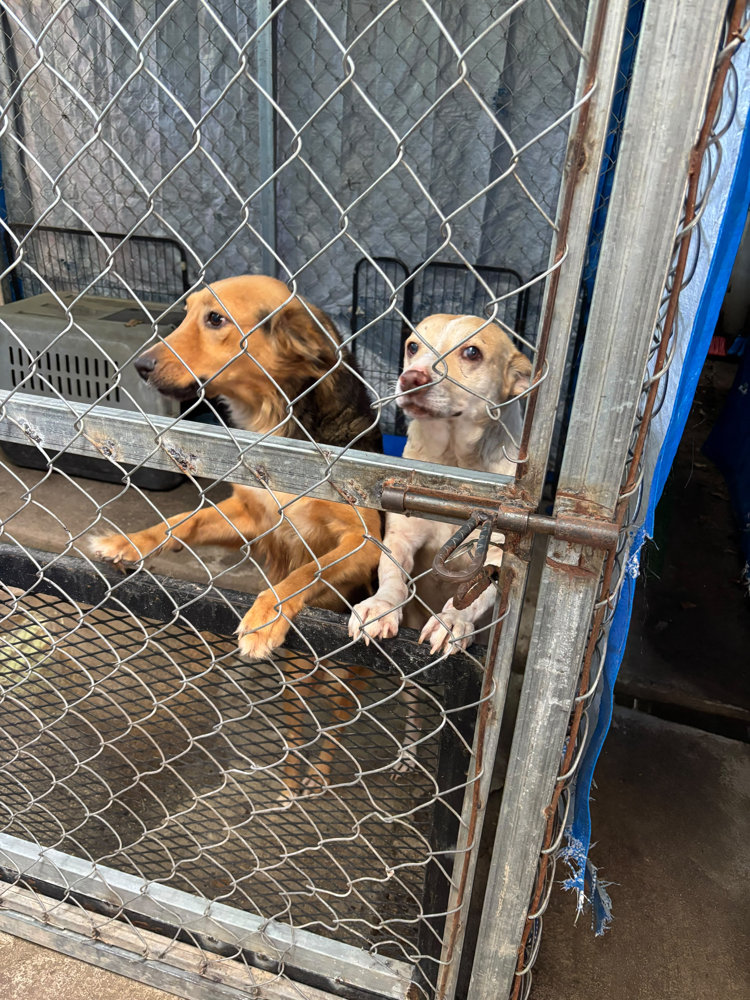

El Centro de Resguardo de Santa Tecla rescata, cuida y da en adopción responsable a perros sin hogar
MISIÓN
Ayudar a todos los perritos en situación de calle, sin importar las condiciones; rescatarlos, sanarlos, cuidarlos y darlos en adopción a una familia que sea capaz de darles todo el amor del mundo.

¿CÓMO LLEGAR?
Visítanos en el Centro de Resguardo Municipal, en Santa Tecla, La Libertad. Toca el botón para abrir la ruta directa en Google Maps.